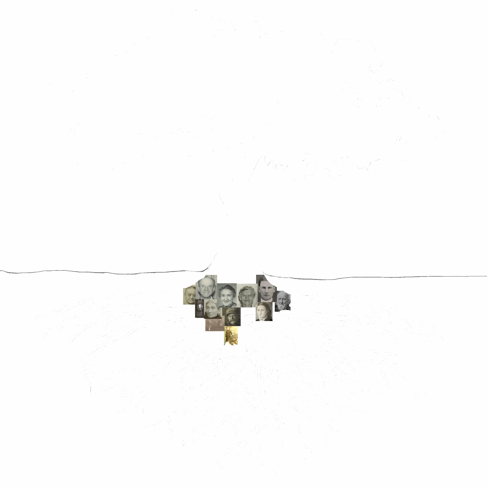
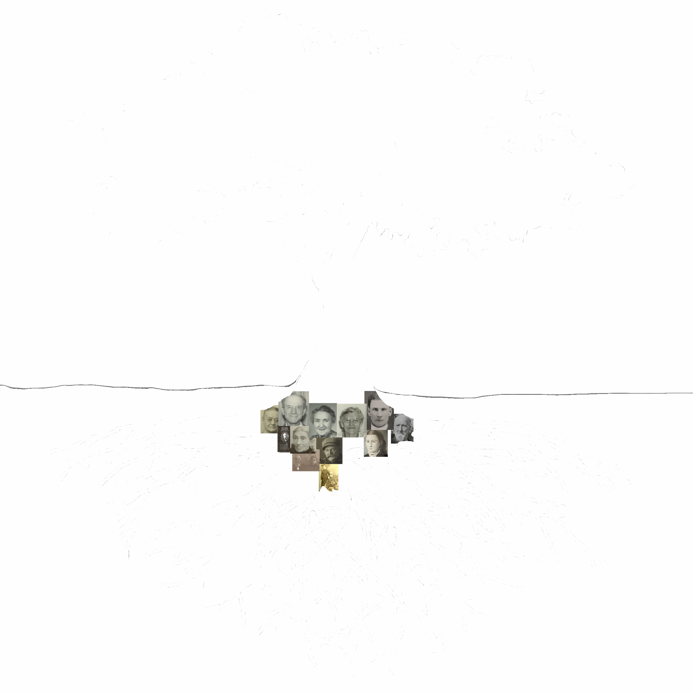

Karen Riomondo
www.linkedin.com/in/karenriomondo
Creative and analytical professional who combines more than a decade of business process analyst experience with degrees in the Fine Arts.
PROFESSIONAL EXPERIENCE
Business Process Analyst
July 2016 - Current
Wells Fargo
Key Responsibilities: Writing business requirements, creating and revising office procedures, performing root cause analysis/ designing process fixes and serving as project manager on small projects.
Accounting Assistant
January 2016 - August 2016
IMPACT Accounting, Inc.
Key Responsibilities: Data entry for bookkeeping clients, bank and credit card reconciliations and client letter writing. Proficiency in a variety of QuickBooks versions including QuickBooks Pro.
Small Business Owner
April 2010 - December 2014
Village Chiropractic
Key Responsibilities: Creating and implementing business and marketing plan, purchasing/inventory, hiring/ managing employees, creating office procedures, bookkeeping and payroll (QuickBooks).
Lead Process Analyst
May 2005 - February 2010
CenturyLink
Key Responsibilities: Wrote business requirements, facilitated meetings between key stake holders, conducted user acceptance testing, wrote procedures for front office and back office procedures, performed root cause analysis and designed process fixes, served as project manager on small projects, gathered and reported key performance indicators (KPI) to leadership, and managed a direct report.
Major Accomplishments:
- Selected by leadership to fix a strategic product’s high level of fallout and customer issues. Results within one year: initial order fallout reduced by 70%, sales code/compensation errors reduced by 42%, bill adjustments/ customer credits reduced by 31%, and net bad debt/unbillable reduced by 26%.
- Managed team to rewrite 2000+ intracompany process documents for better reader experience and search functionality. Results achieved within 15 months: dropped total document count by 94% and reduced the problem of the end user bouncing from document to document by 72%.
- Developed a business requirements tool in Excel that translated business requirements into technical specifications reducing quarterly high-speed Internet promotions requirements development work by 80%.
- Assigned to correct a billing issue with an expensive, one-size-fits-all solution but after root cause review proposed and designed a simpler solution at minimal expense.
- Selected by leadership to act as business representative on procurement team to replace a legacy billing application.
Senior Process Analyst
February 2000 – May 2005
CenturyLink
Key Responsibilities: Wrote business requirements, acted as a bridge between business and Information Technology, participated in user acceptance testing, wrote procedures for front office and back office procedures, performed root cause analysis and designed process fixes.
Major Accomplishments:
- Within one year of promotion into management, assigned as residential operations project lead for creation of Qwest Long Distance, the number one company initiative for 2 years.
- Using knowledge of end to end order flow, discovered increased fallout point where two applications met. Designed solution, cutting fallout by 75% and saving $3MM annually.
- Based on a nomination from Product Management for work on Qwest Long Distance, awarded Qwest’s highest award, the Spirit of Service Award, awarded to the top 1% of employees.
Sales Consultant
July 1998 – February 2000
CenturyLink
Key Responsibilities: Assisted customers calling into call center. Placed orders, answered questions, and reviewed bills to serve customers’ needs. Provided on-site assistance to trainees during sales training classes.
Major Accomplishments:
- Halfway through initial 3 month training period, re-assigned to assist trainer in helping other trainees.
- Within 15 months, reassigned as Escalations Manager answering customer complaints; due to ability to defuse angry customers, repair company image, and for complex problem solving abilities.
- Within 18 months, promoted to management; 6 months earlier than typically allowed for new-hires.
EDUCATION
Master of Fine Arts, Creative Writing
May 2011
Hamline University
Bachelor of Fine Arts
May 1997
Cornish College of the Arts
VOLUNTEER WORK
Board of Directors
April 2011 – June 2012